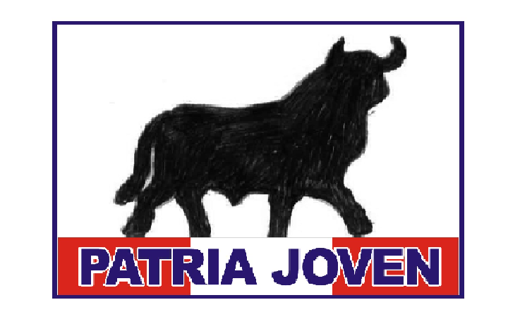

CANDIDATOS A HUARAL 2023
Pobladores de Huaral, sean bienvenidos a este portal el cual fue creado para que se informen y no sigan botando por los mismos Politicos de MIERDA, Que no hacen otra cosa más que jodernos la vida.
ACCION POPULAR
Tipo de Eleccion
Candidatos Obligatorios: 12 Candidatos para reemplazo: 2
Candidato a Alcalde
LUIS ALBERTO BURGOS PACHECO.

PROFESOR
DNI: 15954358 Edad:50
PODEMOS PERÚ
Tipo de Eleccion

Candidatos Obligatorios: 12 Candidatos para reemplazo: 4
Candidato a Alcalde
HUGO ANIANO ALVAREZ CARBALLIDO.
.jpg)
ALCALDE: Municipal de Aucallama 2019 - 2022
CARRERA:NO SE SAVE
DNI: 10506920 Edad: 48
FE EN EL PERU
Tipo de Eleccion
Candidatos Obligatorios: 12 Candidatos para reemplazo: 2
Candidato a Alcalde
LIDIA MARGARITA RIOS ARAUJO.
.jpg)
GERENTE GENERAL: LIDVA INGENIEROS
INGENIERA CIVIL
DNI: 09915785 Edad:46
PARTIDO PATRIOTICO DEL PERÚ
Tipo de Eleccion
Candidatos Obligatorios: 12 Candidatos para reemplazo: 2
Candidato a Alcalde
YSABEL GABRIELA SOTA MALDONADO.
.jpg)
GERENTE: Multiservicios GABY
CARRERA:NO SE SAVE
DNI: 16003906 Edad:51
PARTIDO POLITICO NACIONAL PERU LIBRE
Tipo de Eleccion

Candidatos Obligatorios: 12 Candidatos para reemplazo: 3
Candidato a Alcalde
HERMES RODRIGUEZ VALLADARES.
.jpg)
ACTUALMENTE Presidente de los Productores de Maíz y Sorgo del Perú
AGRICULTOR
DNI: 15954638 Edad: 74
PARTIDO DEMOCRATICO SOMOS PERÚ
Tipo de Eleccion

Candidatos Obligatorios: 12 Candidatos para reemplazo: 4
Candidato a Alcalde
EDGAR VILLANUEVA JARA.
.jpg)
Actual regidor de Jaime Cirilo, URIBE OCHOA
CARRERA: NO SE SABE
DNI: 40957888 Edad: 41
MOVIMIENTO REGIONAL UNIDAD CIVICA LIMA
Tipo de Eleccion
Candidatos Obligatorios: 12 Candidatos para reemplazo: 6
Candidato a Alcalde
JUAN DIAZ AMADO.
.jpg)
GINECÓLOGO
CARRERA: Medicina Humana
DNI: 25645150 Edad:65
AVANZA PAIS - PARTIDO DE INTEGRACION SOCIAL
Tipo de Eleccion
Candidatos Obligatorios: 12 Candidatos para reemplazo: 2
Candidato a Alcalde
LUIS ALFONZO SARDI CORAL.
.jpg)
ACTUALMENTE: Director Pollería Que Tal Pollo y director comercial en prodigio Perú
INGENIERO AGRONOMO
DNI: 16017460 Edad: 58
ALIANZA PARA EL PROGRESO
Tipo de Eleccion
Candidatos Obligatorios: 12 Candidatos para reemplazo: 2
Candidato a Alcalde
MÓNICA PILAR TAKAYAMA MINETTO.
.jpg)
Ex-Gerente de participación Ciudadana de Ana Aurora Kobayashi Kobayashi
CARRERA: NO SE SABE
DNI: 15748814 Edad: 51
JUNTOS POR EL PERÚ
Tipo de Eleccion
Candidatos Obligatorios: 12 Candidatos para reemplazo: 1
Candidato a Alcalde
CARLOS CHIZAN LARREA.
.jpg)
ACTUALMENTE: Gerente General de Seguridad Privada CHIZAN S.A.C.
CARRERA: Licenciado en Administración y Ciencias Policiales.
DNI: 09450020 Edad: 64
CONCERTACIÓN PARA EL DESARROLLO REGIONAL - LIMA
Tipo de Eleccion
Candidatos Obligatorios: 12 Candidatos para reemplazo: 4
Candidato a Alcalde
EDITH GIOVANNA FELIX MARCOS.
.jpg)
ALCALDESA DE VEINTICIETE DE NOVIEMBRE 2019 - 2022
CARRERA: NO SE SABE
DNI: 16012063 Edad: 45
RENOVACION POPULAR
Tipo de Eleccion
Candidatos Obligatorios: 12 Candidatos para reemplazo: 1
Candidato a Alcalde
LUIS ARTURO SANCHEZ VALENCIA.
.jpg)
GERENTE EN: ARTURO SANCHEZ REPRESENTACIONES S.A
CARRERA: NO SE SABE
DNI: 15959430 Edad: 59
DEMOCRATA VERDE
Tipo de Eleccion

Candidatos Obligatorios: 12 Candidatos para reemplazo: 0
Candidato a Alcalde
JOSE EDUARDO VASQUEZ DURAND.
.jpg)
Sub Gerente de Seguridad Ciudadana en el periodo de VICTOR BAZAN
Policia Nacional del Perú
DNI: 42015174 Edad: 68
PATRIA JOVEN
Tipo de Eleccion

Candidatos Obligatorios: 12 Candidatos para reemplazo: 2
Candidato a Alcalde
FERNANDO JOSE CARDENAS SANCHEZ.
.jpg)
HIJO DEL EX ALCALDE: Melchor Cárdenas Vásquez
CARRERA: Medicina Humana
DNI: 16005640 Edad: 50
FUERZA POPULAR
Tipo de Eleccion
Candidatos Obligatorios: 12 Candidatos para reemplazo: 0
Candidato a Alcalde
ARISTOTELES CRISTIANS APONTE BIORGGIO.
.jpg)
GERENTE: PROJECT MANAGEMENT FORWARD E.I.R.L
CARRERA: NO SE SABE
DNI: 15725910 Edad: 52